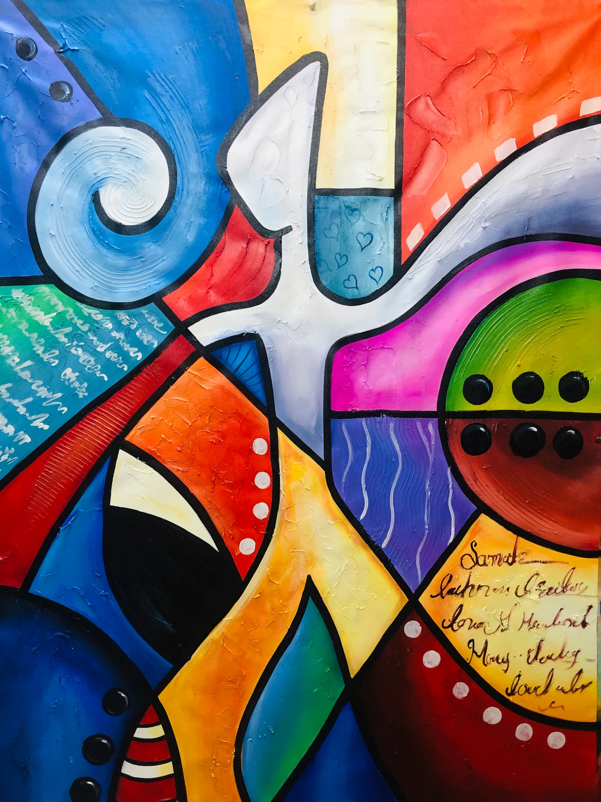

ประเภทของงานศิลป์
ประเภทของงานศิลปะแบ่งตามการรับรู้ได้เป็น 3 กลุ่มใหญ่ ดังนี้ ทัศนศิลป์ (Visual Arts): ศิลปะที่รับรู้ได้ด้วยการมองเห็น เช่น จิตรกรรม (ภาพวาด), ประติมากรรม (งานปั้น/แกะสลัก), สถาปัตยกรรม (การออกแบบสิ่งก่อสร้าง) และภาพพิมพ์ โสตศิลป์ (Auditory Arts): ศิลปะที่รับรู้ได้ด้วยการฟัง เช่น ดนตรี การขับร้อง และวรรณกรรม โสตทัศนศิลป์ (Performing & Audiovisual Arts): ศิลปะที่รับรู้ได้ทั้งการมองเห็นและการฟังไปพร้อมกัน เช่น นาฏศิลป์ การแสดงละคร ภาพยนตร์ และศิลปะสื่อผสม